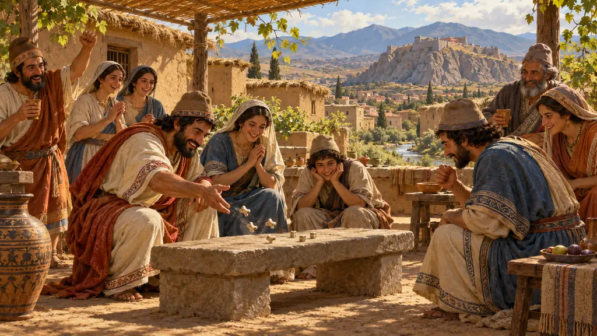
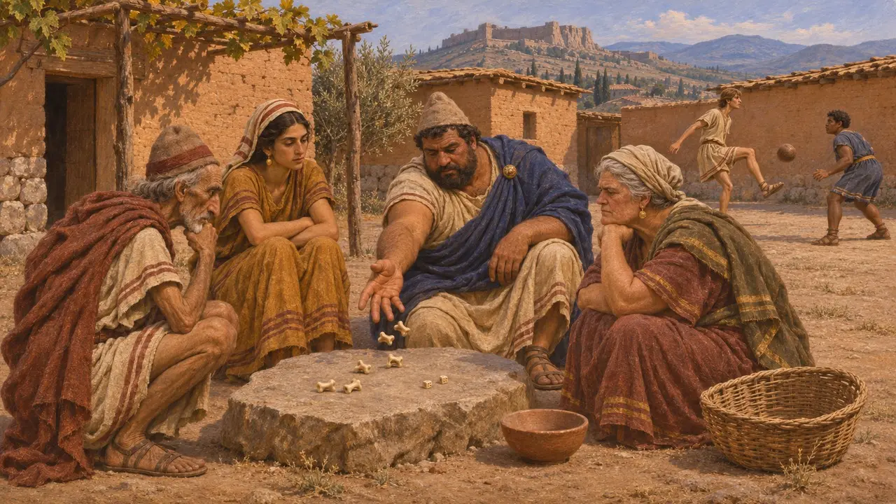
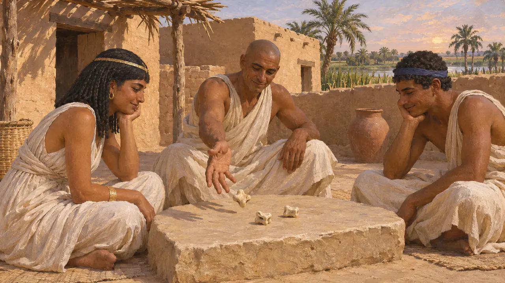
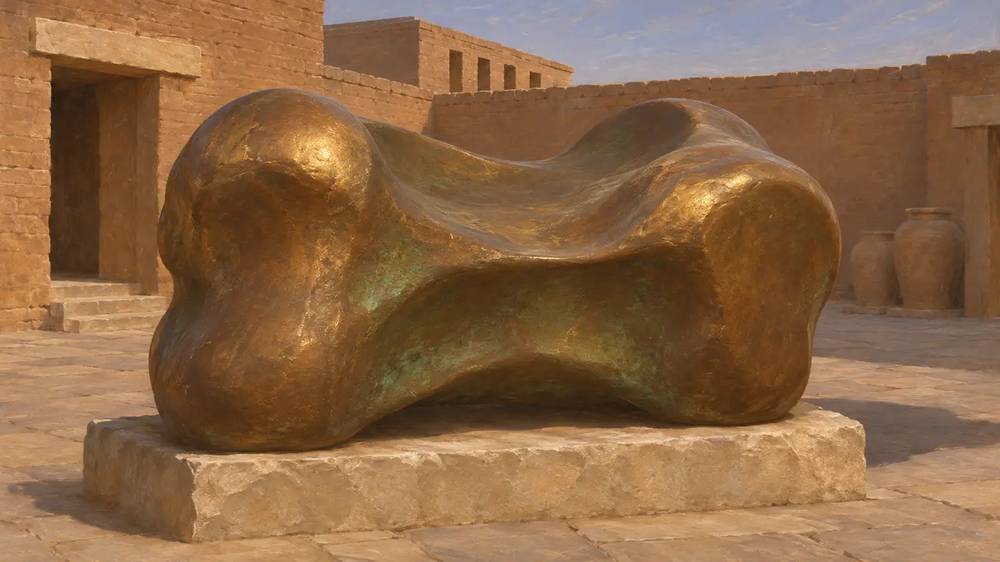
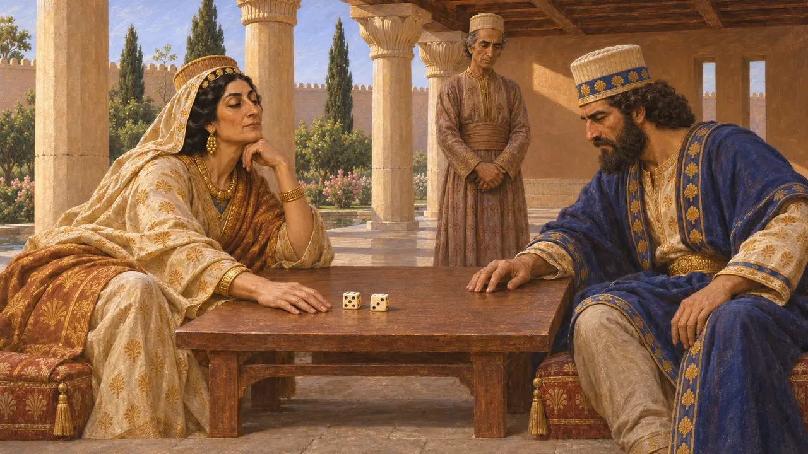
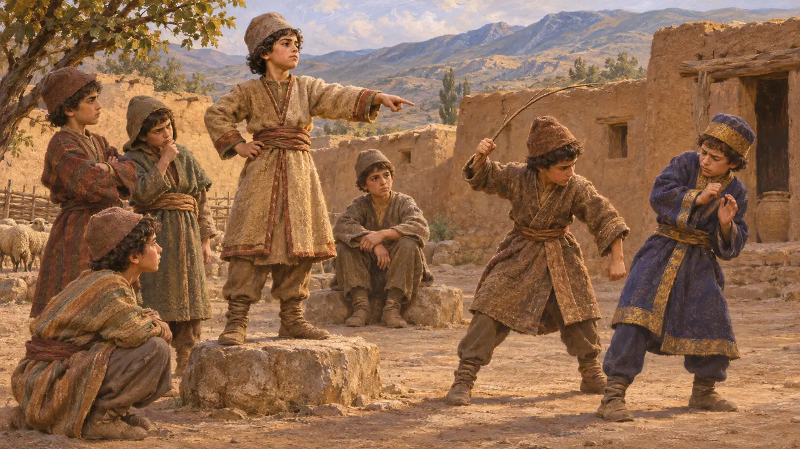

놀이 마당
사르디스와 제국 전역의 주사위, 복사뼈 놀이, 공놀이, 기원전 550-479년경
운과 기술을 겨루는 놀이는 페르시아 제국 곳곳의 안뜰과 거리, 궁전에서 벌어졌다. 헤로도토스는 리디아인이 오랜 기근 동안 주사위와 공기놀이, 공놀이를 발명했다고 주장했다고 기록한다. 이 주장이 역사적 사실일 수는 없지만, 리디아인이 그리스인과 함께 즐기던 오락의 공을 자신들에게 돌리고 싶어 했음을 보여 준다.
게임에서: 사르디스 레벨에서 놀이 마당은 서비스 건물입니다. 설명은 헤로도토스를 비교적 충실히 따르지만, 놀이 전용 건물은 알려진 바가 없습니다. 놀이는 탁 트인 뜰이나 거리에서 벌어졌으므로 이 건물은 게임의 창작입니다.

리디아 기근 이야기
고대의 전승헤로도토스에 따르면 리디아인은 자신들과 그리스인이 함께 즐기는 놀이, 곧 주사위와 공기놀이, 공놀이를 자신들이 발명했다고 주장했다. 다만 말판 놀이는 예외였다. 그는 아티스 왕 때 기근이 들자 리디아인들이 하루는 먹을 것을 잊으려고 종일 놀이를 하고, 다음 날은 음식을 먹었다고 전한다. 그렇게 18년이 지나자 백성의 절반이 제비를 뽑아 티레노스를 따라 서쪽으로 배를 타고 떠났다고 한다.
Herodotus 1.94

리디아보다 오래된
분쟁 중역사가들은 리디아인이 발명했다는 주장을 받아들이지 않는다. 주사위와 복사뼈 놀이는 리디아 왕들이 등장하기 훨씬 전부터 이집트, 메소포타미아, 인더스 유역에서 이미 오래된 놀이였다. 한때 에트루리아인의 기원을 설명하는 데 쓰였던 티레노스 휘하의 이주 이야기 역시 논란이 많으며 대체로 의심받고 있다.
I. Finkel (ed.), Ancient Board Games in Perspective, 2007

수사에서 나온 청동 공깃돌
당대 기록1901년 수사의 프랑스 발굴단은 무게가 90킬로그램이 넘는 청동 공깃돌을 발견했는데, 아폴론에게 바친 십일조라는 그리스어 명문이 새겨져 있었다. 이것은 아마 밀레토스 인근 디디마의 아폴론 성역에서 나온 것으로, 기원전 494년 페르시아인이 밀레토스를 함락한 뒤 전리품으로 옮겨진 듯하다. 지금은 루브르 박물관에 있으며, 공깃돌이 놀잇감일 뿐 아니라 신성한 봉헌물이 될 수도 있었음을 보여 준다.
Bronze astragalus from Susa, Louvre (French excavations at Susa, 1901)

페르시아 궁정의 주사위
고대의 전승플루타르코스에 따르면 파리사티스 왕비는 아들 아르타크세르크세스 2세와 주사위 놀이를 하여 환관 마사바테스를 따냈다. 그녀는 작은아들 키루스의 시신을 훼손한 책임을 그에게 물어 처형하게 했다. 이 이야기는 기원전 401년 쿠낙사 전투 직후, 즉 이 게임의 시대보다 훨씬 뒤를 배경으로 하며 궁정 드라마로 전해지지만, 주사위 놀이가 페르시아 귀족들 사이에서 익숙한 오락이었음을 시사한다.
Plutarch, Artaxerxes 17

왕 놀이를 한 소년
후대의 전설헤로도토스에 따르면, 목동의 아들로 자란 어린 키루스는 마을 아이들의 놀이에서 왕으로 뽑혔고, 자기 명을 따르지 않은 귀족의 아들을 매질하게 했다. 이 일화는 타고난 통치자가 놀이를 통해 드러난다는 교훈담이며, 실제 사건의 기록이 아니다.
Herodotus 1.114
출처
- Herodotus 1.94
- Herodotus 6.19
- Herodotus 1.114
- Plutarch, Artaxerxes 17
- I. Finkel (ed.), Ancient Board Games in Perspective, 2007
- P. Briant, From Cyrus to Alexander, 2002